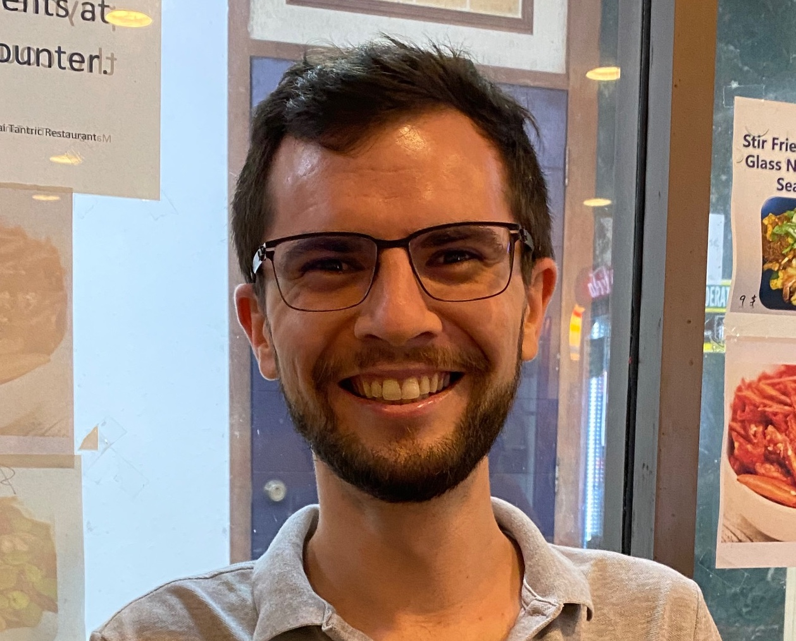

I am a faculty member in the School of Computing and Information Systems at Singapore Management University, where I am part of the System Analysis and Verification (SAV) group. I completed my PhD in 2014 at the University of York (UK), under the supervision of Detlef Plump. Before coming to Singapore, I was a postdoc for three years at ETH Zürich, where I worked with Bertrand Meyer.
My research broadly addresses the problem of engineering correct and secure software/systems. I have worked on techniques for testing/defending cyber-physical systems using fuzzing and machine learning, tools for analysing execution models of concurrency APIs, and logics for reasoning about the correctness of graph-rewriting programs.
See my research for more.
| 2026-27 Term 1 |
CS302: DevOps Principles and Practices IS212: Software Project Management |
| 2025-26 Term 1 |
CS302: IT Solution Lifecycle Management IS212: Software Project Management |
See my teaching for more.
Programme Committees:
| 2027 | ICSE |
| 2026 | FSE, ISSTA, ICFEM, SE4ADS, TERMGRAPH |
| 2025 | ICSE, ISSTA, ICFEM, SE4ADS, AIoTS, GCM |
| 2024 | FormaliSE, ICGT, SiMLA |
| 2023 | ESEC/FSE, ICGT (Co-Chair), ICSE (SRC Judge), iFM (PhD Symp.) |
For my other activities, see here.